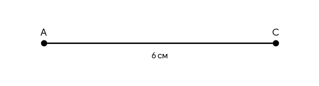
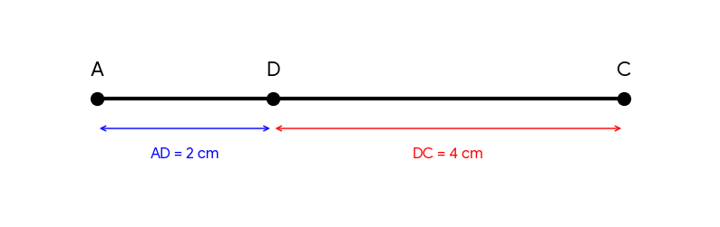

Uzdevums 1.
Uzzīmē 6 cm garu nogriezni AC. Atliec uz tā punktu D tā, lai tas nogriezni sadalītu attiecībā 2 : 4.
Uzzīmē 6 cm garu nogriezni AC. Atliec uz tā punktu D tā, lai tas nogriezni sadalītu attiecībā 2 : 4.
▼
Nogrieznis AC (nosacījums)

1. solis. Uzzīmē nogriezni AC ar garumu 6 cm.
2. solis. Saskaiti attiecības daļas:
2 + 4 = 6 daļas.
3. solis. Aprēķini vienas daļas garumu:
6 cm : 6 = 1 cm.
4. solis. Aprēķini posmus:
- AD = 2 × 1 cm = 2 cm
- DC = 4 × 1 cm = 4 cm
Risinājuma shēma

✅ Atbilde:
Punkts D atrodas 2 cm no punkta A un 4 cm no punkta C.
Punkts D atrodas 2 cm no punkta A un 4 cm no punkta C.